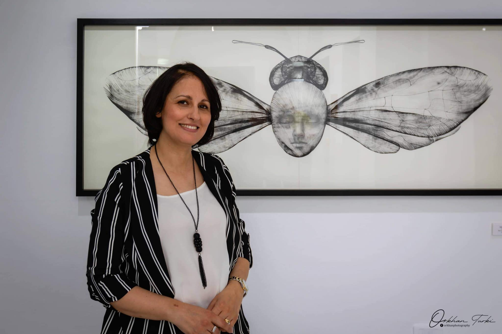

AU FIL DU FIL.
Imed Jemaiel, Mai 2021 |
Hormis une variété de supports, la panoplie du dessinateur-peintre, bénie par les augustes Académies des Beaux-arts voire par tout le corps du métier va du vulgaire charbon, accommodé en bâton de fusain passant par les minéraux durs ou effritables des crayons et pastels et arrivant jusqu'aux pinceaux à poils dont certains doivent leur terminaison au pelage des bêtes sauvages ; les martres et les petit-gris entre autres.
Cet attirail résistant à des siècles d'usage ne tente guère notre artiste ; trop de récits et de dictons l'investissent et le saturent, trop d'illustres noms propres l'auréolent !
Maintenant recensant quelques fils, au petit bonheur : fil à plomb, fil électrique, fil de fer, fil à coudre, fil télégraphique, fil dentaire, fil à broder, fil à couper le beurre etc. ça trame, ça ourdit, ça mesure, ça dégage, ça délimite, ça serre... Les usages des fils commercialisés sont légion. La raison pratique a du mal à venir à bout de leur utilité.
Chahrazed nous somme à prendre une petite halte pour considérer un drôle de fil. Bien que soustrait à une pelote ordinaire, entre ses mains ce fil devenu machin est voué à un authentique dessein. Démis de sa fonction initiale il se donne à cœur joie à un nouveau mode d’emploi. Appelons-le : « fil-à-encre » ! Probablement en un moment de grâce où se condense en un fiat lux, passé, présent et futur, Chahrazed a bien compris que son projet naissant tiendra tout de go à ce dérisoire bout de fil !
L’anonymat du fil-à-encre, séduit ; du jeu s’annonce à perte de vue.
« L’unique geste du fil –à-encre »
Ce titre en « clin d’œil », renvoie au fameux « l’Unique trait de pinceau » dont le révolutionnaire peintre chinois Shitao voulait qu’il soit à l’origine de toute peinture, il serait de quelque façon son fondement et sa quintessence. Loin de nous l’idée d’assimiler d’un seul tenant les styles et les siècles, mais sur un point particulier, l’analogie – forcément parodique – nous parait légitime. On y reviendra.
Le dispositif élémentaire mis en place par notre artiste se résume au trio, papier, fil et encre de chine, maintenant il s’agit de le mettre à l’œuvre. Le fil enduit d’encre et de suite posées entre deux feuilles de papier, la main gauche en serre-joint, les tient bien superposés l’une contre l’autre, la main droite se saisissant du bout du fil le tire plus ou moins fort. Le frottement du fil, pris entre les deux feuilles, exprime l’encre préalablement bue. Un dessin, forcément double, dont les contours sont généralement prévus, s’étale en miroir sur l’un et l’autre papier.
Maintes lampadaires, gadgets ou jouets se mettent en marche en tirant sur un fil, dans ces cas de figure, la mécanique est bien huilée et le geste de tirer n’est pas plus qu’une transmission d’une force sans qualité. Ici la force motrice communiquée au fil est toute traversée de désir, j’espère ne pas dévier en disant quelle relèverait même d’une érotique dont le papier reçoit les moindres chuchotements. En tirant sur le fil rassasié d’encre de chine, un appareil de nerfs et de musculature agit au nom du corps propre, lui-même se ressourçant à même la sève de la vie imaginative voire fantasmatique. L’appareil, ainsi, mis en branle, un jeu de stries et d’ondulations de toutes sortes font parler une encre qui tantôt bave et tantôt se déploie en un mince filet mais toujours prenant acte des confessions d’un solidaire corps-souffle-esprit ! Au terme de l’unique geste du fil-à-encre ce qui est traduit-transfiguré à partir du corps à l’œuvre est un pan d’ornement chiffré ! geste après geste, pan après pan, s’agrège ainsi ce qui étoffera le grand organe, abeille, tronc, tête humaine ou autres, répondant au patron de départ consigné par un sommaire contour.
Esthétique et éthique : vases communicants.
L’unique geste du fil-à-encre n’est pas qu’argument pour une conquête plastique d’un papier en mal de signes, il est prioritairement, expression et exaltation d’un tempérament, instauration d’un point de vue sur le monde où les trois règnes sont appelés à s’abreuver à la même encre et à étoffer leur tessiture à même le semis de grains du papier ou ils se trouvent réunis. C’est là la profession de foi de Shahrazade et elle tient à la consigner noir sur blanc.
Un insecte monumental, scarabée ou papillon, se trouve distribué sur quatre feuilles (j’omets intentionnellement le papier), il est savamment écrit /dessiné à coup de fils tirés. Un dépouillement et une austérité qui ne rejettent la boue chromatique et son lyrisme douteux que pour n’adhérer qu’à la franchise linéaire qui va droit à la quintessence des choses. Pour un instant, on peut croire qu’on est face à une planche usurpée à un entomologiste, scrutons de près ; on est agréablement déçu !
Serait-ce l’œuvre manifeste où le parti pris esthétique/éthique connaitra, voire reconnaitra, son emblème ?
Ici même, les plus inconsidérés et les plus fragiles des créatures (que les sages de l’extrême orient se gardent de ne pas écraser) sont l’incipit d’une inédite leçon d’histoire naturelle où l’on déclasse les veilles hiérarchies, où l’on renverse la table des valeurs en vue de « démocratiser » nos gestes et nos regards qu’on projette sur les êtres et les choses. Désormais il est question de les fondre en soi dans une unitaire respiration cosmique.
Sur la table de travail de Chahrazed, Un brin d’herbe, un être humain, un insecte c’est tout un.
Loin des rapports de domination, ce sont les hybridations, les échanges d’attributs voire les fusions qui soutiennent ce nouveau contrat naturel. Assené, noir sur blanc sans faux-fuyants chromatiques, une véritable interpellation de notre fibre militante !
A coups de fils tirés ; des embranchements, des ramifications, des plis, des veines, des ramures, etc. Conduisent ses fluides nourriciers pour des modes d’être pacifiés entre les genres.
Prône-t-on par là une propédeutique pour nous initier aux devenir animal voire végétal de l’humain ? En tout cas les têtes aux yeux clos, qui se profilent sur maintes œuvres en rêvent !
En annexe.
Chahrazed aime les vieux livres où un défilé d’illustrations en noir et blanc déclinent êtres et choses selon l’optique exhaustive des encyclopédies.
Cet enchantement s’explique-t-il par cette ligne d’encre entêtée qui fait le tour du monde pour sécréter à chaque station, les répliques stylisées de ses occupants ?
Ou est-ce le fruit de cette imagination qui fait bouger les vignettes et nous laisse apostrophés face à ce déroutant cinéma intérieur ?
Un siècle âpres Max Ernst, notre artiste ciseaux en main, réactive et prolonge cette fascination pour l’iconographie décalée des dictionnaires et des illustrés. Elle met en pièces ce qu’elle a adoré comptant sur ce rachat par la colle qui va monter le rebus et ouvrir le mystère.
Une profanation, les ciseaux qui découpent dans la chair du livre ?
Mais toujours est-il qu’on n’ose profaner qu’une fois soutenu par les promesses d’un dieu naissant !
Encore une fois il s’agit de répondre à cette question à chaque fois renouvelée ; comment faire tenir de concert le tout-venant du morcelé ?
.